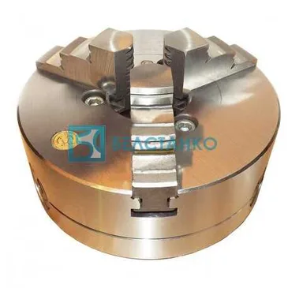
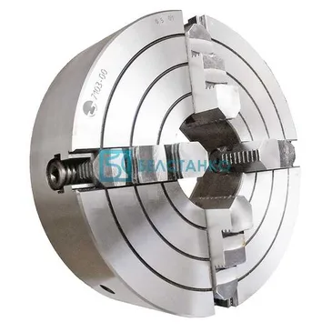
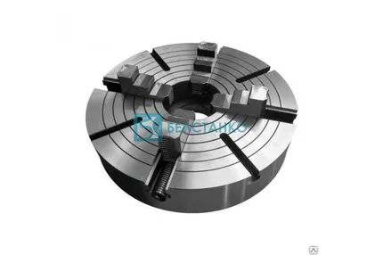
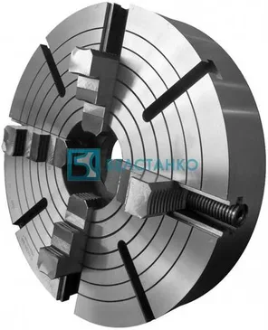
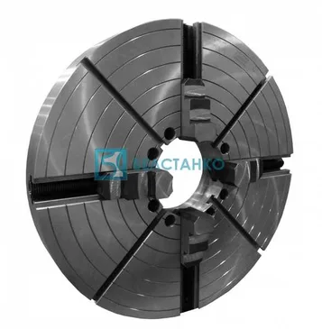

3-315.11.34Патрон токарный самоцентрирующий трёхкулачковый 315 мм. с креплением через переходной фланец по ГОСТ 388953 000 ₽Сравнить
3-315.39.34Патрон токарный самоцентрирующий трёхкулачковый 315 мм. с креплением через поворотную шайбу по ГОСТ 12593 (DIN 55027)64 000 ₽Сравнить
3-315.41.34Патрон токарный самоцентрирующий трёхкулачковый 315 мм. с креплением через поворотную шайбу по ГОСТ 12593 (DIN 55027)53 000 ₽Сравнить
3-315.55.34Патрон токарный самоцентрирующий трёхкулачковый 315 мм. с креплением через поворотную шайбу по ГОСТ 12593 (DIN 55027)69 000 ₽Сравнить
3-315.63.34Патрон токарный самоцентрирующий трёхкулачковый 315 мм. с креплением непосредственно на фланцевый конец шпинделя по ГОСТ 12595 (DIN 55026)76 000 ₽Сравнить
7103-0002Патрон токарный четырёхкулачковый 250 мм. с независимым перемещением кулачков с креплением непосредственно на фланцевый конец шпинделя по ГОСТ 12595 (DIN 55026)113 160 ₽Сравнить
7103-0003Патрон токарный четырёхкулачковый 315 мм. с независимым перемещением кулачков с креплением непосредственно на фланцевый конец шпинделя по ГОСТ 12595 (DIN 55026)187 920 ₽Сравнить
7103-0004Патрон токарный четырёхкулачковый 400 мм. с независимым перемещением кулачков с креплением непосредственно на фланцевый конец шпинделя по ГОСТ 12595 (DIN 55026)241 560 ₽Сравнить
7103-0005Патрон токарный четырёхкулачковый 400 мм. с независимым перемещением кулачков с креплением непосредственно на фланцевый конец шпинделя по ГОСТ 12595 (DIN 55026)241 560 ₽Сравнить
7103-0006Патрон токарный четырёхкулачковый 500 мм. с независимым перемещением кулачков с креплением непосредственно на фланцевый конец шпинделя по ГОСТ 12595 (DIN 55026)288 480 ₽Сравнить
7103-0007СПатрон токарный четырёхкулачковый 630 мм. с независимым перемещением кулачков с креплением непосредственно на фланцевый конец шпинделя по ГОСТ 12595 (DIN 55026)471 960 ₽Сравнить
7103-0008СПатрон токарный четырёхкулачковый 800 мм. с независимым перемещением кулачков с креплением непосредственно на фланцевый конец шпинделя по ГОСТ 12595 (DIN 55026)654 000 ₽Сравнить
7103-0011Патрон токарный четырёхкулачковый 1000 мм. с независимым перемещением кулачков с креплением непосредственно на фланцевый конец шпинделя по ГОСТ 12595 (DIN 55026)799 200 ₽Сравнить
7103-0011БПатрон токарный четырёхкулачковый 1000 мм. с независимым перемещением кулачков и зубчатым венцом для силового точения (с креплением непосредственно на фланцевый конец шпинделя по ГОСТ 12595 (DIN 55026))1 058 000 ₽Сравнить
7103-0012Патрон токарный четырёхкулачковый 315 мм. с независимым перемещением кулачков с креплением через поворотную шайбу по ГОСТ 12593 (DIN 55027)187 920 ₽Сравнить
7103-0013Патрон токарный четырёхкулачковый 400 мм. с независимым перемещением кулачков с креплением через поворотную шайбу по ГОСТ 12593 (DIN 55027)241 560 ₽Сравнить
7103-0014Патрон токарный четырёхкулачковый 500 мм. с независимым перемещением кулачков с креплением через поворотную шайбу по ГОСТ 12593 (DIN 55027)288 480 ₽Сравнить
7103-0015СПатрон токарный четырёхкулачковый 630 мм. с независимым перемещением кулачков с креплением через поворотную шайбу по ГОСТ 12593 (DIN 55027)471 960 ₽Сравнить
7103-0018Патрон токарный четырёхкулачковый 250 мм. с независимым перемещением кулачков с креплением через переходной фланец по ГОСТ 3889113 160 ₽Сравнить
7103-0019Патрон токарный четырёхкулачковый 315 мм. с независимым перемещением кулачков с креплением через переходной фланец по ГОСТ 3889187 920 ₽Сравнить
7103-0020Патрон токарный четырёхкулачковый 400 мм. с независимым перемещением кулачков с креплением через переходной фланец по ГОСТ 3889241 560 ₽Сравнить
7103-0021Патрон токарный четырёхкулачковый 500 мм. с независимым перемещением кулачков с креплением через переходной фланец по ГОСТ 3889288 480 ₽Сравнить
7103-0022СПатрон токарный четырёхкулачковый 630 мм. с независимым перемещением кулачков с креплением через переходной фланец по ГОСТ 3889471 960 ₽Сравнить
7103-0023СПатрон токарный четырёхкулачковый 800 мм. с независимым перемещением кулачков с креплением через переходной фланец по ГОСТ 3889654 000 ₽Сравнить